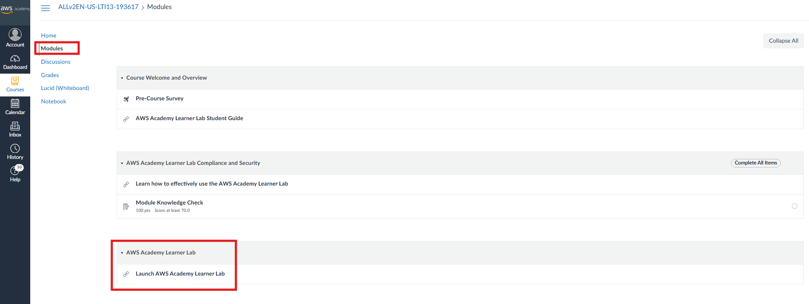

Cluster AWS Academy en une commande¶
Ce guide crée le cluster de référence de la formation sur AWS Academy (1 control plane, 2 workers, kubeadm, Calico, Ingress NGINX, StorageClass local-path) avec une seule commande. Votre seule action est de fournir vos identifiants AWS.
Le résultat est identique au cluster construit pas à pas à l'Atelier 01 : les ateliers 02 à 08 fonctionnent sans adaptation.
Quand utiliser ce chemin express ?
- Recréer un cluster après une session AWS Academy réinitialisée ou une destruction par erreur.
- Rattraper un stagiaire absent ou bloqué à l'Atelier 01.
- Préparer en 10 minutes le cluster de démonstration du formateur.
Le parcours d'apprentissage reste l'Atelier 01 : c'est en tapant kubeadm init et kubeadm join que l'on comprend comment un cluster s'assemble (chapitre 3 du programme, « Installation et configuration »).
Ce que fait le script¶
| Étape | Action | Durée |
|---|---|---|
| 1 | Vérifie terraform, aws, kubectl et ssh ; sous Windows, installe les outils manquants avec winget |
0 à 3 min |
| 2 | Vérifie que les identifiants AWS de ~/.aws/credentials autorisent bien EC2 |
10 s |
| 3 | Initialise Terraform ; utilise labsuser.pem si vous l'avez téléchargée, sinon crée une paire de clés SSH dans AWS |
30 s |
| 4 | Crée les 3 instances EC2 (ou redémarre celles arrêtées la veille) | 1 min |
| 5 | Attend que bootstrap.sh ait installé containerd, kubeadm, kubelet et kubectl sur chaque nœud |
3 à 5 min |
| 6 | kubeadm init + Calico sur k8s-control, puis kubeadm join sur les deux workers, et attend les 3 nœuds Ready |
2 à 3 min |
| 7 | setup-addons.sh : Helm, StorageClass local-path (par défaut), Ingress NGINX (NodePort 30080), alias k |
1 à 2 min |
| 8 | Copie le kubeconfig sur votre poste (terraform/kubeconfig.yaml) et affiche les nœuds |
10 s |
Le script peut être relancé à volonté : chaque étape déjà faite est sautée.
Étape 1 : Démarrer le Learner Lab¶
- Sur AWS Academy, ouvrez le cours AWS Academy Learner Lab → Modules → Launch AWS Academy Learner Lab.
- Cliquez sur Start Lab et attendez le voyant vert.
- Ouvrez AWS Details → AWS CLI → Show : gardez cette fenêtre à portée de main.

Clé SSH : facultative
Vous pouvez télécharger Download PEM et enregistrer labsuser.pem dans labs/01-Installation-Cluster/terraform/. Sinon, le script crée lui-même une paire de clés k8s-formation-key et l'enregistre au même endroit, sous le même nom.
Étape 2 : Enregistrer vos identifiants AWS¶
Copiez le bloc AWS Details → AWS CLI → Show, de [default] jusqu'à la fin de aws_session_token=... :
Ouvrez le fichier des identifiants, remplacez tout son contenu par ce bloc, puis enregistrez :
| Système | Commande |
|---|---|
| Windows | notepad "$env:USERPROFILE\.aws\credentials" |
| Linux / macOS | mkdir -p ~/.aws && nano ~/.aws/credentials |
Identifiants personnels et temporaires
Ne collez jamais ce bloc dans un support, un chat ou un commit. Il change à chaque Start Lab et expire au bout de 4 heures : recopiez-le à chaque nouvelle session.
Étape 3 : Lancer le script¶
Prérequis : Git. Sous Linux et macOS, installez aussi Terraform et l'AWS CLI (tableau des outils de Prérequis & Environnement). Sous Windows, le script les installe pour vous.
Windows (PowerShell)
git clone https://github.com/Rym28/kubernetes-training.git formation
cd formation
powershell -ExecutionPolicy Bypass -File .\labs\01-Installation-Cluster\scripts\create-cluster.ps1
Linux / macOS (Bash)
git clone https://github.com/Rym28/kubernetes-training.git formation
cd formation
bash labs/01-Installation-Cluster/scripts/create-cluster.sh
Dépôt déjà cloné ? Placez-vous à sa racine et lancez seulement la dernière ligne.
Laissez le script travailler, environ 10 minutes. Il se termine par :
==================================================================
Cluster prêt en 9 min : k8s-control + k8s-worker-1 + k8s-worker-2
==================================================================
Étape 4 : Utiliser le cluster¶
Le script affiche les commandes à reprendre. Depuis la racine du dépôt :
Windows (PowerShell)
Linux / macOS (Bash)
Résultat attendu :
NAME STATUS ROLES AGE VERSION
k8s-control Ready control-plane 6m v1.30.x
k8s-worker-1 Ready <none> 4m v1.30.x
k8s-worker-2 Ready <none> 4m v1.30.x
Redéfinissez KUBECONFIG dans chaque nouveau terminal. Poste verrouillé (port 6443 filtré) ? Travaillez en Option B : la commande ssh affichée en fin de script ouvre une session sur k8s-control, où kubectl est déjà configuré et les manifests sont dans ~/labs/.
Maîtriser le budget (50 $ pour la formation)¶
| Moment | Windows (PowerShell) | Linux / macOS (Bash) |
|---|---|---|
| Le soir : éteindre les instances (le cluster est conservé) | powershell -ExecutionPolicy Bypass -File .\labs\01-Installation-Cluster\scripts\stop-session.ps1 |
bash labs/01-Installation-Cluster/scripts/stop-session.sh |
| Le matin : redémarrer et vérifier | Relancez create-cluster.ps1 |
Relancez create-cluster.sh |
| Fin de formation : tout supprimer | powershell -ExecutionPolicy Bypass -File .\labs\01-Installation-Cluster\scripts\destroy-cluster.ps1 -AutoApprove |
bash labs/01-Installation-Cluster/scripts/destroy-cluster.sh -y |
Le matin, après Start Lab, recopiez le nouveau bloc dans ~/.aws/credentials (étape 2), puis relancez create-cluster : il redémarre les instances, saute l'installation déjà faite et régénère le kubeconfig. k8s-control garde son adresse (Elastic IP) ; les workers changent d'IP publique, ce qui n'a pas d'effet sur kubectl.
Dépannage¶
Indice : « AWS refuse les identifiants » ou « voc-cancel-cred »
- Le Learner Lab n'est pas démarré, ou le voyant n'est pas encore vert.
- Le fichier contient le bloc d'une session précédente : AWS Academy bloque les anciens identifiants (politique
voc-cancel-cred) dès qu'un nouveau Start Lab a lieu. Recopiez le bloc actuel (étape 2). - Le bloc copié est incomplet : il doit contenir les trois lignes
aws_access_key_id,aws_secret_access_keyetaws_session_token. - Vérification rapide :
aws ec2 describe-vpcs --query "Vpcs[0].VpcId" --output textdoit afficher unvpc-....
Indice : Windows refuse d'exécuter le script
- « L'exécution de scripts est désactivée » : lancez le script avec
powershell -ExecutionPolicy Bypass -File …, comme indiqué à l'étape 2. - « … n'est pas signé numériquement » (dépôt récupéré en
.zip) : débloquez les scripts une fois avecGet-ChildItem -Recurse -Filter *.ps1 | Unblock-File. wingetvient d'installer un outil mais le script ne le trouve pas : ouvrez un nouveau terminal et relancez.
Indice : terraform apply échoue
UnauthorizedOperation: seules les régionsus-east-1etus-west-2sont autorisées (-Region us-west-2/--region us-west-2).InvalidKeyPair.NotFound: la session AWS Academy a été réinitialisée et la paire de clés a disparu. Supprimezlabsuser.pemetexpress.auto.tfvarsdelabs/01-Installation-Cluster/terraform/(s'il n'existe plus d'instance), puis relancez.- « Des instances existent mais labsuser.pem est absente » : téléchargez
labsuser.pemdepuis AWS Details danslabs/01-Installation-Cluster/terraform/.
Indice : le script s'arrête sur un nœud (SSH, bootstrap, join)
Relancez simplement le script : il reprend là où il s'est arrêté. Si l'erreur persiste, connectez-vous au nœud avec la commande ssh de l'Atelier 01 et consultez :
Critères de Validation (Checklist)¶
-
aws sts get-caller-identityaffiche unArncontenantvoclabs. -
kubectl get nodesaffichek8s-control,k8s-worker-1etk8s-worker-2à l'étatReady. -
kubectl get pods -n calico-system: les podscalico-nodesontRunning. -
kubectl get storageclassaffichelocal-path (default). -
kubectl get pods -n ingress-nginx: le contrôleur estRunning.